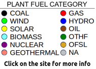

Toggle navigation
INGRID
Home
Analytics
Plant Advanced Search
Operational Benchmark
Signature Data Benchmark
Products
Costcom
WindLife
Services
Cost of Cycling
Failure Analysis
High Energy Piping
Pricing
Blog
People
Contact

back to search »
{% extends "footer.html" %}